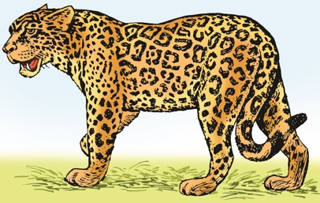
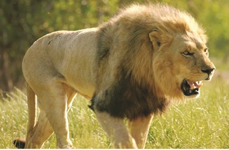
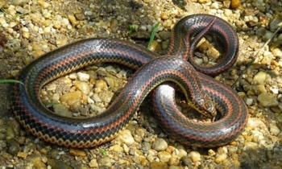
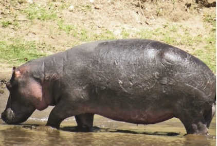
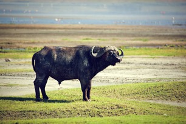
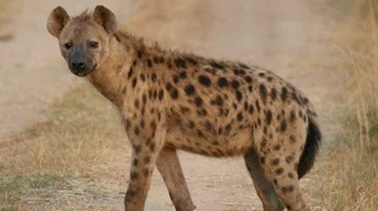

Ninatambua wanyama hatarishi.
Picha ya paka wa katuni mwenye rangi ya kahawia akionesha kwa mkono.

Ninaepuka wanyama hatarishi ili kuwa salama.

Ni mnyama mwenye rangi ya dhahabu. Ngozi yake ina madoa meusi.
Ni mnyama mwenye manyoya mengi upande wa mbele. Anakula nyama tu. Hujulikana kama mfalme wa pori.
Ni mnyama mkubwa anayeishi majini, mwenye mkia mrefu na miguu mifupi. Ana meno makali.

Ni mnyama anayetambaa. Hana miguu na ana ngozi yenye magamba.
Ni mnyama mkubwa kuliko wote wanaoishi nchi kavu. Ana masikio makubwa, mkonga mrefu na miguu minene kama nguzo.

Ni mnyama mwenye mwili usio na nywele, miguu mifupi na anaishi zaidi kwenye maji.
Ni mnyama anayefanana na ng'ombe.
Ni mnyama wa porini anayefanana na mbwa. Ana miguu mirefu mbele na mifupi nyuma. Ana madoa meusi kwenye ngozi yake.